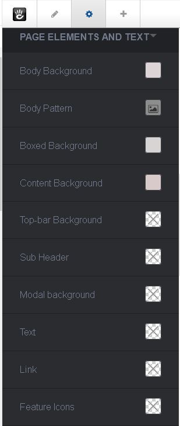

Personalize colors¶
Concrete5 has a theme customization built-in the core. This system is powerful to personalize theme colors, it became a bit limited for other options like toggle (on/off), Fonts (From Google fonts), Select options.
In this case we choose to use this theme customization only for color settings, others settings are available in the theme options section, in the dashboard.
First of all, if you are not familiar with this system, read this documentation
- editors
- in-page-editing
- the-toolbar
- page-edit-drop-down
- design .
- page-edit-drop-down
- the-toolbar
- in-page-editing
Now it will be important to understand how Supermint are built for colors.
Four colors¶
Almost all colors from the theme are calculated from four basic colors : Primary, Secondary, Tertiary, Quaternary. If you play with these colors on the left of this page you will see that lots of elements are changing. This is to made your customization’s life easier. Just change some colors and all the website became yours!
Need more controls? You have it!¶
Some colors in the theme customization panel are transparent with a cross:
It’s because this color are calculated or keep from one of basic colors. If you want to cut this link, feel free! Choose a color and you will have finest customization.
Original reference: web.archive.org page